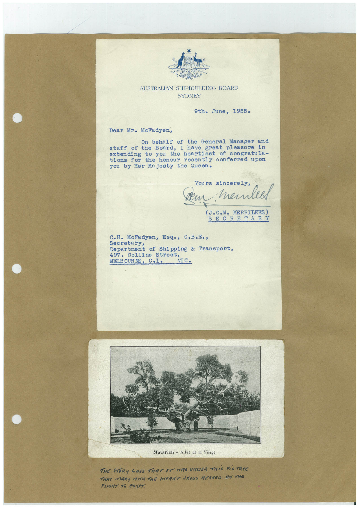

Book 1 · scan 144


Description
Transcription
Context
Review notes
Compare the machine draft with the scan. Handwriting and names need human review.
Artifacts
Edit the artifacts field in this note’s frontmatter to change these records. This summary is generated.
B01-S144-A01 — Letter, Photo & Handwritten note — Book 1, scan 144
Types: Typed document, Letter, Photo, Handwritten note
Scope: Whole scanned page; individual items can be split out during review.
Caption: Not mapped yet.
Caption source: Not recorded yet.
Caption status: unmapped
Machine transcription
AUSTRALIAN SHIPBUILDING BOARD SYDNEY 9th. June, 1955. Dear Mr. McFadyen, On behalf of the General Manager and staff of the Board, I have great pleasure in extending to you the heartiest of congratula- tions for the honour recently conferred upon you by Her Majesty the Queen. Yours sincerely, dem memlea (J.C.M. MERRILEES) SECRETARY C.H. McFadyen, Esq., C.B.E., Secretary, Department of Shipping & Transport, 497. Collins Street, MELB OUR NE VIC. Matarich - Arbre de la Vierge. THE STORY GOES THAT IT WAS UMDER THIS FiGTREE THAT MARY MIYA THE INFANT JESUS RESTEO ON THE FLIGHT TO EGYPT.